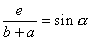
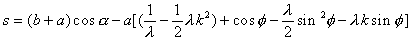
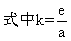
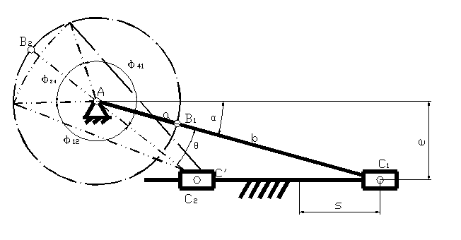
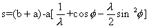
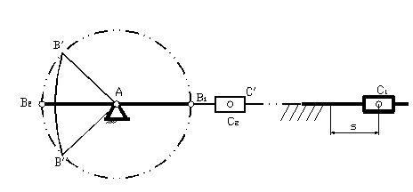

按从动杆近似停歇要求设计平面四杆机构
在实际生产中，有时要求从动杆在其某一极限位置上有一近似停歇，以配合实现某种工艺动作的要求。用连杆机构来实现这种近似停歇运动，具有运动平稳，加工简便等优点。因此已在不少机器 中得到应用。如在针织机、织布机、包装机等机械中采用曲柄摇杆机构实现某一极限位置上的近似停歇。又如冲床、压床等采用曲柄滑块机构实现某一极限位置上的近似停歇。
曲柄滑块机构的设计
在下图所示的偏心曲柄滑块机构中，滑块的两个极限位置为C1、C2 。C1、为前极限位置，C2 为后极限位置。可以看出，滑块在后极限位置附近运动要比在前极限位置附近更加缓慢，当曲柄与连杆长度比a/b=λ较大时，近似停歇时间可以更长。由图可得以下的公式：



如果冲程为H，则取s=H-△H，可以求出在后极限位置附近近似停歇的曲柄转角。

偏心曲柄滑块机构示意图
对于对心曲柄滑块机构，如图所示，可得

同理，取s=H-△H，可以求出后极限位置附近近似停歇的曲柄转角。

对心曲柄滑块机构示意图